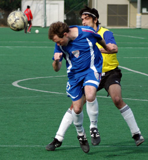
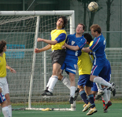
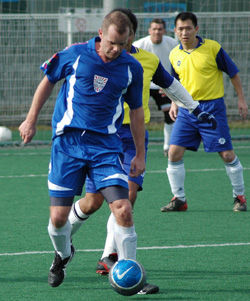

|
Hachioji Park, Sun 21st Jan. Having just seen BEFC score late in their game to go top of the league, BFC Vags knew exactly what was required of them. News of a remarkable 3-0 victory by the BFC added to the pressure to maintain the good name of British Football Club. And of course they also wanted to send Tom off to New York in winning style.
So it was disappointing but depressingly familiar to find ourselves down 2-0 after half an hour. That said, this was not the typical Vagabonds' style of nodding off at the start of the game. Maritizio’s winning run was proving to be no fluke. Solid and mobile in midfield, composed at the back and with a skilful, pacey striker, they soon let us know we had a quality game of football on our hands.
The midfield battle was tight and engaging and there were chances at both ends. Alex kept running, looking to use his pace to break, but was shackled well. Muzzy had a couple of difficult chances and Simon hit the bar with a looping shot (or mishit) from outside the box.
Then two sucker punches as Maritizio’s quality play created openings for well taken goals. 2-0 down and deja-vu.
This is a different Vags team these days though and we did not lose our confidence or shape and we kept battling.
The gap was reduced to one goal when an in-swinging free kick from the left from Simon shaved Muzzy’s eyebrows before sneaking in at the far post. Game on again!
Minutes later, an excellent cross from Graham on the right wing was struck first time by Simon to go agonizingly wide. We had the belief that another comeback was on the cards. 2-1 at half time.
Unfortunately, some team reshuffling was required when the back line lost its leader Gary to a back injury. Ged’s (many) years of experience and uncanny positional sense still required backing up with a little pace, especially against their striker, who continued to threaten. Maz bravely stepped in to do the job, and did it admirably, but now we had lost our central midfield dynamo.

The second half was a much tighter affair with few clear cut chances. A smartly hit long range shot from Paul was stopped by their keeper. Alex’s runs continued but the offside flag was not on his side. Super-sub Adrian, knowing the cameras were on him once more, could not come up with another fairy tale equaliser.
We kept fighting though, right up to the point, 5 minutes from time, when they landed the killer blow, breaking the line once more and hitting another well-taken goal.
So it was not to be. Ground lost on the leaders and commiseration beers for Tom rather then sweet victory ones. A good game though and let’s see how Vagabonds respond to this setback.
Report by Simon Sparkes
|